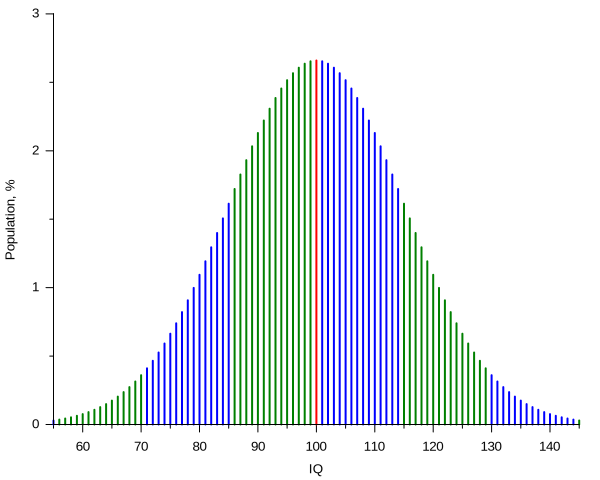

graph TD
A[Dane] --> B[Jakościowe]
A --> C[Ilościowe]
B --> D[Nominalne]
B --> E[Porządkowe]
C --> F[Dyskretne]
C --> G[Ciągłe]
style A fill:#e1f5ff
style B fill:#fff4e1
style C fill:#ffe1f5
style D fill:#f0f0f0
style E fill:#f0f0f0
style F fill:#f0f0f0
style G fill:#f0f0f0
4 Typy Danych w Naukach Społecznych
W badaniach z obszaru nauk społecznych zrozumienie natury danych jest kluczowe dla wyboru odpowiednich metod analizy i wyciągania prawidłowych wniosków.
4.1 Podstawy Zbiorów Liczbowych
Note
Zrozumienie właściwości zbiorów liczbowych jest kluczowe dla uchwycenia natury różnych typów danych w naukach społecznych.
Podstawowe Zbiory Liczbowe
- Liczby Naturalne (ℕ): Liczby naturalne to zbiór liczb służących do liczenia i określania kolejności {0, 1, 2, 3, …}
- Liczby Całkowite (ℤ): Obejmują liczby naturalne, ich przeciwności i zero {…, -2, -1, 0, 1, 2, …}
- Liczby Wymierne (ℚ): Liczby, które można wyrazić jako ułamek dwóch liczb całkowitych
- Liczby Rzeczywiste (ℝ): Wszystkie liczby na osi liczbowej, w tym wymierne i niewymierne
Właściwości Zbiorów
Zbiory Przeliczalne: Zbiory, których elementy można ustawić w relacji jeden do jednego z liczbami naturalnymi. Na przykład, zbiór liczb całkowitych jest przeliczalny.
Zbiory Nieprzeliczalne: Zbiory, które nie są przeliczalne. Zbiór liczb rzeczywistych jest nieprzeliczalny.
Zbiory Dyskretne: Zbiory, w których każdy element jest oddzielony od innych elementów skończoną przerwą. Liczby całkowite tworzą zbiór dyskretny.
Zbiory Gęste: Zbiory, w których między dowolnymi dwoma elementami zawsze znajduje się inny element zbioru. Liczby wymierne i rzeczywiste są zbiorami gęstymi.
4.2 Typy danych (dwie podstawowe typologie)
Na poziomie podstawowym zmienne można podzielić na numeryczne (ilościowe) lub kategorialne (jakościowe).
Zmienne numeryczne reprezentują każdą obserwację jako liczbę (np. liczba sprzedanych produktów, temperatura, wzrost, wiek). Mogą być dyskretne (zliczane) lub ciągłe (mierzone).
Zmienne kategorialne reprezentują każdą obserwację jako słowo lub etykietę (np. nazwy marek, typy zwierząt, kolory, nazwy krajów). Mogą być porządkowe (uporządkowane, jak rankingi) lub nominalne (nieuporządkowane, jak nazwy).
Typologia danych 1: Jakościowe vs Ilościowe
Typologia danych 2: Poziomy pomiaru Stevensa
graph TD
A[Poziomy pomiaru] --> B[Kategorialne/Jakościowe]
A --> C[Numeryczne/Ilościowe]
B --> D[Nominalne]
B --> E[Porządkowe]
C --> F[Interwałowe]
C --> G[Ilorazowe]
D --> D1[Tylko kategorie<br/>np. płeć, kolor]
E --> E1[Uporządkowane kategorie<br/>np. rankingi, oceny]
F --> F1[Równe przedziały, brak prawdziwego zera<br/>np. temperatura °C]
G --> G1[Równe przedziały, prawdziwe zero<br/>np. wzrost, waga, wiek, Kelwiny]
style A fill:#e1f5ff
style B fill:#fff4e1
style C fill:#ffe1f5
style D fill:#f0f0f0
style E fill:#f0f0f0
style F fill:#f0f0f0
style G fill:#f0f0f0
Kluczowa różnica: skale kategorialne (jakościowe) vs. numeryczne
Fundamentalna różnica między skalami kategorialnymi a numerycznymi nie polega na liczbie kategorii, ale na naturze odstępów (intervals). Skale numeryczne (interwałowe i stosunkowe) mają odstępy zdefiniowane przez obiektywny, fizyczny standard pomiaru. Na przykład:
- Temperatura: każdy stopień reprezentuje tę samą zmianę energii termicznej, niezależnie od tego, jak to odczuwamy
- Odległość: centymetr między 5cm a 6cm reprezentuje dokładnie tę samą fizyczną długość co centymetr między 105cm a 106cm
- Czas: sekunda między 10:00:01 a 10:00:02 ma ten sam czas trwania co sekunda między 15:47:33 a 15:47:34
- Waga: różnica między 50kg a 51kg reprezentuje tę samą ilość masy co różnica między 150kg a 151kg
Skale kategorialne, w tym wszystkie skale ocen (rating scales), nie posiadają tego obiektywnego standardu: nawet 1000-punktowa skala ocen pozostaje porządkowa (ordinal), ponieważ odstępy są zdefiniowane psychologicznie, a nie fizycznie zmierzone. Kiedy ktoś ocenia swoją zgodność jako “7” versus “8” na skali od 1 do 1000, nie ma gwarancji, że psychologiczna odległość między 7 a 8 jest równa odległości między 47 a 48, lub między 847 a 848. Respondent zasadniczo wybiera spośród uporządkowanych kategorii, a nie mierzy np. linijką. Dodanie większej liczby kategorii nie tworzy równych odstępów - po prostu tworzy więcej uporządkowanych kategorii. Dlatego nawet pozornie ciągła skala ocen z setkami wartości pozostaje fundamentalnie kategorialna: brakuje jej obiektywnego standardu pomiaru, który sprawiłby, że odstępy byłyby udowodnione jako równe.
4.3 Dane dyskretne a dane ciągłe
W analizie danych i statystyce kategoryzujemy zmienne jako dyskretne lub ciągłe. Ten podział kształtuje sposób, w jaki analizujemy dane i które metody statystyczne stosujemy. Jednak granica między tymi kategoriami nie zawsze jest ostra, a niektóre zmienne wykazują cechy obu typów. Niniejszy rozdział omawia dane dyskretne i ciągłe, ich różnice oraz interesujące przypadki zmiennych, które kwestionują nasze intuicyjne rozumienie.

Dane dyskretne
Dane dyskretne mogą przyjmować tylko określone, policzalne wartości. Wartości te są często (choć nie zawsze) liczbami całkowitymi.
Charakterystyka danych dyskretnych:
- Przeliczalny zbiór możliwych wartości
- Często reprezentowane przez liczby całkowite
- Mogą być skończone lub nieskończone
- Brak wartości pomiędzy dwoma sąsiednimi punktami danych
Przykłady:
- Liczba studentów w klasie
- Liczba samochodów sprzedanych przez salon
- Liczba monet w skarbonce
- Wynik rzutu kostką (1, 2, 3, 4, 5 lub 6)
Dane ciągłe
Dane ciągłe mogą przyjmować dowolną wartość w danym zakresie, w tym wartości ułamkowe i dziesiętne. Co ważne, ciągłość charakteryzuje się gęstością: między dowolnymi dwiema wartościami istnieje nieskończenie wiele innych możliwych wartości.
Charakterystyka danych ciągłych:
- Wartości ze zbiorów gęstych (liczby wymierne lub rzeczywiste)
- Mogą być mierzone z dowolną precyzją (teoretycznie)
- Między dowolnymi dwoma punktami danych istnieje nieskończenie wiele wartości
- Typowo reprezentowane na skali ciągłej
Przykłady:
- Wzrost
- Waga
- Temperatura
- Czas trwania
Uwaga matematyczna: Gęstość i ciągłość
Dane ciągłe pochodzą ze zbiorów gęstych, w których między dowolnymi dwiema różnymi wartościami istnieje inna wartość ze zbioru. Najczęstsze przykłady to:
- Liczby rzeczywiste: nieprzeliczalne i gęste
- Liczby wymierne: przeliczalne, ale gęste
Ta właściwość gęstości nadaje danym ciągłym charakterystyczną „gładkość” i pozwala stosować statystyczne metody oparte na rachunku różniczkowym i całkowym.
Spektrum dyskretne-ciągłe
W praktyce niektóre zmienne, które matematycznie są dyskretne, często traktuje się tak, jakby były ciągłe. Ta dualna natura zapewnia elastyczność w analizie i interpretacji tych zmiennych.
Powody traktowania danych dyskretnych jako ciągłych:
Małe przyrosty dyskretne (wysokie zagęszczenie wartości na skali, np. dochód per capita w PLN)
- Gdy zmienna dyskretna ma bardzo małe przyrosty między możliwymi wartościami, może aproksymować ciągłość.
- Przykład: Dochód mierzony w groszach. Choć technicznie dyskretny, bardzo małe przyrosty i ogromna liczba możliwych wartości sprawiają, że zachowuje się podobnie do zmiennej ciągłej.
Wygoda analityczna
- Metody ciągłe często dają rozsądne i użyteczne wyniki nawet dla gęstych zmiennych dyskretnych.
- Założenie ciągłości pozwala na wykorzystanie metod opartych na rachunku różniczkowym i istniejących narzędzi statystycznych.
Aproksymacja zjawisk podstawowych
- Pomiar dyskretny może reprezentować proces ciągły u podstaw.
- Przykład: Choć mierzymy czas w jednostkach dyskretnych (sekundy, minuty, godziny), czas sam w sobie płynie w sposób ciągły.
Przykłady zmiennych o dualnej naturze dyskretno-ciągłej:
Wiek
- Dyskretny: Typowo podawany w pełnych latach
- Ciągły: Może być traktowany jako zmienna ciągła w wielu analizach, szczególnie przy dużych populacjach lub gdy liczy się precyzja
Cena i dochód
- Dyskretne: Ceny i dochody są faktycznie mierzone w dyskretnych jednostkach (np. grosze lub najmniejsza jednostka walutowa)
- Ciągłe: W modelach ekonomicznych i wielu analizach traktowane jako zmienne ciągłe ze względu na ich gęstą naturę i wygodę analityczną
Wyniki testów
- Dyskretne: Często podawane jako liczby całkowite lub stałe przyrosty
- Ciągłe: W analizach statystycznych mogą być traktowane jako ciągłe, szczególnie gdy zakres możliwych wyników jest duży
Podsumowanie
Rozróżnienie między danymi dyskretnymi a ciągłymi nie zawsze jest sztywne w praktyce. Wiele zmiennych, w tym te obejmujące pieniądze, procenty czy gęste pomiary, można postrzegać zarówno przez pryzmat dyskretny, jak i ciągły. W razie wątpliwości należy rozważyć zarówno precyzję pomiaru, jak i cele analityczne przy podejmowaniu decyzji, jak traktować zmienną. Wybór powinien być kierowany naturą danych, celami analizy i potencjalnymi implikacjami wyboru. Ta elastyczność, stosowana rozważnie, zapewnia badaczom potężne narzędzia do wydobywania wniosków z danych.
Dane Dyskretne vs. Ciągłe: Analogia Językowa
Kluczowe Rozróżnienie Językowe
W języku polskim mamy precyzyjne rozróżnienie:
- “Liczba” → używamy dla rzeczy policzalnych
- “Ilość” → używamy dla rzeczy niepoliczalnych
To rozróżnienie doskonale odzwierciedla dwa podstawowe typy danych liczbowych:
Dane Dyskretne = “Liczba czegoś”
Używamy słowa “liczba” (tak jak mówimy “liczba studentów”)
Wartości są rozdzielone jak pojedyncze elementy
Przykłady:
- Liczba książek: 0, 1, 2, 3…
- Liczba punktów w teście: 0, 1, 2…
- Liczba mieszkańców: 100, 101, 102…
🤔 Czy poprawne jest powiedzenie “ilość studentów” czy “liczba studentów”? (Poprawna forma pomoże Ci rozpoznać typ danych)
Dane Ciągłe = “Ilość czegoś”
Używamy słowa “ilość” (tak jak mówimy “ilość wody”)
Wartości płynnie przechodzą jedna w drugą
Przykłady:
- Ilość cieczy: 1,5231… litra
- Ilość czasu: 2,3891… godziny
- Ilość energii: 5,7123… kWh
🤔 Czy mówimy “ilość wody” czy “liczba wody”? (Poprawna forma wskazuje na typ danych)
Sposób Rozpoznawania
- Czy użyłbyś słowa “liczba”? → Dane dyskretne
- Czy użyłbyś słowa “ilość”? → Dane ciągłe
✍️ Ćwiczenie: Uzupełnij poprawnym słowem i określ typ danych
- _____ uczniów w klasie (liczba/ilość): typ _____
- _____ deszczu (liczba/ilość): typ _____
- _____ piosenek (liczba/ilość): typ _____
- _____ temperatury (liczba/ilość): typ _____
4.4 Wprowadzenie do Typologii Danych Stevensa
Stanley S. Stevens, amerykański psycholog, wprowadził system klasyfikacji skal pomiarowych w swoim artykule z 1946 roku “On the Theory of Scales of Measurement”. Ten system, znany jako typologia danych Stevensa lub poziomy pomiaru, stał się fundamentalny dla zrozumienia, jak różne typy danych powinny być analizowane i interpretowane.
Stevens zaproponował cztery poziomy pomiaru:
- Nominalny
- Porządkowy
- Interwałowy
- Ilorazowy
Każdy poziom ma specyficzne właściwości i pozwala na różne rodzaje operacji statystycznych i analiz.


Dlaczego „poziomy” pomiaru?
Stanley Stevens użył terminu „poziomy pomiaru” zamiast po prostu „typy”, ponieważ pojmował je jako istniejące w hierarchii, gdzie każdy poziom opiera się na poprzednim, dodając coraz więcej właściwości matematycznych.
Struktura hierarchiczna:
Stevens uporządkował je od najmniej do najbardziej informatywnych: Nominalny → Porządkowy → Interwałowy → Stosunkowy. Każdy poziom zawiera wszystkie właściwości poziomów poniżej, plus dodatkowe cechy matematyczne.
Perspektywa teorii pomiaru:
Stevens był przede wszystkim zainteresowany tym, jakie operacje matematyczne są sensowne na każdym poziomie:
- Nominalny: tylko porównania równości
- Porządkowy: dodaje relacje większy/mniejszy niż
- Interwałowy: dodaje dodawanie i odejmowanie
- Stosunkowy: dodaje mnożenie, dzielenie i sensowne proporcje
Słowo „poziom” podkreśla, że nie są to tylko arbitralne kategorie, ale reprezentują stopnie zaawansowania pomiaru. Wyższe poziomy pozwalają na potężniejsze analizy statystyczne i przekazują więcej informacji o mierzonych zjawiskach.
To hierarchiczne ujęcie pomogło badaczom zrozumieć nie tylko jaki rodzaj danych posiadają, ale co mogą z nimi legalnie zrobić statystycznie.
Skala Nominalna
Definicja
Skala nominalna jest najbardziej podstawowym poziomem pomiaru. Używa etykiet lub kategorii do klasyfikacji danych bez żadnej wartości ilościowej ani porządku.
Właściwości
- Kategorie są wzajemnie wykluczające się
- Brak inherentnego porządku między kategoriami
- Nie można wykonywać znaczących operacji arytmetycznych
Przykłady
- Narodowość (Polak, Niemiec, …)
- Grupy krwi (A, B, AB, O)
- Kolor oczu (Niebieskie, Brązowe, Zielone, Piwne)
- Zmienne binarne (“Sukces” versus “Niepowodzenie”)
Skala Porządkowa
Definicja
Skala porządkowa kategoryzuje dane w uporządkowane kategorie, ale odstępy między kategoriami niekoniecznie są równe lub znaczące.
Właściwości
- Kategorie mają zdefiniowany porządek
- Różnice między kategoriami nie są kwantyfikowalne
- Operacje arytmetyczne na liczbach nie są znaczące
Przykłady
- Poziomy wykształcenia (Szkoła Średnia, Licencjat, Magister, Doktorat)
- Skale Likerta (Zdecydowanie się nie zgadzam, Nie zgadzam się, Neutralnie, Zgadzam się, Zdecydowanie się zgadzam)
- Status społeczno-ekonomiczny (Niski, Średni, Wysoki)
Typy pytań ze skalą Likerta
Skala Likerta to rodzaj skali ocen (rating scales), który stanowi porządkowy poziom pomiaru, co oznacza, że odpowiedzi można uszeregować w kolejności, ale odległości między poszczególnymi punktami niekoniecznie są równe.
Skala zgody (Zdecydowanie się nie zgadzam → Zdecydowanie się zgadzam)
- Najlepsza do mierzenia przekonań i percepcji
- Przykład: “Ta strona internetowa jest łatwa w nawigacji”
Skala satysfakcji (Bardzo niezadowolony → Bardzo zadowolony)
- Idealna do oceny doświadczeń i usług
- Przykład: “Jak ocenia Pan/Pani jakość obsługi klienta?”
Skala opinii (Zdecydowanie się sprzeciwiam → Zdecydowanie popieram)
- Wykorzystywana do badania stanowisk wobec propozycji lub inicjatyw
- Przykład: “Jak Pan/Pani ocenia wprowadzenie pracy hybrydowej?”
Skala częstotliwości/postawy (Nigdy → Zawsze)
- Mierzy wzorce zachowań i konsystencję
- Przykład: “Poleciłbym/Poleciłabym ten produkt innym”
Dobre praktyki: Używaj skal 5-7 punktowych, upewnij się, że stwierdzenia są jasne i jednoznaczne oraz utrzymuj spójny kierunek (od pozytywnego do negatywnego lub odwrotnie).
Wybór między parzystą (brak punktu środkowego) a nieparzystą skalą Likerta jest istotną decyzją metodologiczną, a nie tylko kwestią formatowania. W literaturze nie ma konsensusu, że jedno podejście jest uniwersalnie lepsze. Twój wybór powinien być podyktowany Twoimi ramami teoretycznymi i tym, co punkt środkowy rzeczywiście reprezentowałby w Twoim konkretnym kontekście. Co mierzysz i czy masz teoretyczne powody, by sądzić, że neutralność powinna lub nie powinna istnieć?
Przykłady skali ocen (rating scales)


Skala interwałowa (Interval Scale)
Definicja
Skala interwałowa posiada uporządkowane kategorie z równymi odstępami między sąsiednimi kategoriami. Jednakże brakuje jej prawdziwego punktu zerowego.
Właściwości
Równe odstępy między sąsiednimi kategoriami: Różnica między dowolnymi dwiema sąsiednimi wartościami reprezentuje tę samą wielkość zmiany. Na przykład różnica między 10°C a 20°C reprezentuje tę samą zmianę temperatury co różnica między 80°C a 90°C. Oznacza to, że możemy sensownie dodawać i odejmować wartości (np. “dzisiaj jest o 5 stopni cieplej niż wczoraj”).
Brak prawdziwego punktu zerowego (zero jest arbitralne): Zero nie reprezentuje całkowitego braku mierzonej własności. Na przykład 0°C nie oznacza “braku temperatury” - to po prostu punkt zamarzania wody. To arbitralne zero mogłoby być umieszczone gdzie indziej (jak w skali Fahrenheita, gdzie woda zamarza przy 32°F).
Stosunki między wartościami nie są znaczące: Ponieważ zero jest arbitralne, nie możemy powiedzieć, że 20°C jest “dwa razy cieplejsze” niż 10°C. Gdybyśmy przeliczyć to na Fahrenheita (50°F i 68°F), stosunek byłby zupełnie inny, co pokazuje, że stosunek zależy od naszego arbitralnego wyboru skali.
Kluczowa intuicja: Na skali interwałowej różnice mają spójne znaczenie, ale stosunki nie.
Przykłady
- Temperatura w stopniach Celsjusza lub Fahrenheita
- Lata kalendarzowe
- Skala pH
- Wysokość nad poziomem morza
Skala Ilorazowa
Definicja
Skala ilorazowa jest najwyższym poziomem pomiaru. Ma wszystkie właściwości skali interwałowej plus prawdziwy punkt zerowy, co sprawia, że stosunki między wartościami są znaczące.
Właściwości
- Wszystkie właściwości skal interwałowych
- Prawdziwy punkt zerowy
- Stosunki między wartościami są znaczące
Przykłady
- Wzrost
- Waga
- Wiek
- Dochód
Znaczenie w Badaniach i Analizie
Zrozumienie typologii danych Stevensa jest kluczowe z kilku powodów:
Wybór odpowiednich testów statystycznych: Poziom pomiaru determinuje, które analizy statystyczne są odpowiednie dla danego zbioru danych.
Interpretacja wyników: Znaczenie wyników statystycznych zależy od poziomu pomiaru zaangażowanych zmiennych.
Projektowanie narzędzi pomiarowych: Przy tworzeniu ankiet lub innych narzędzi pomiarowych badacze muszą wziąć pod uwagę poziom pomiaru, który chcą osiągnąć.
Transformacja danych: Czasami dane mogą być przekształcane z jednego poziomu na drugi, ale musi to być robione ostrożnie, aby uniknąć błędnej interpretacji.
Kontrowersje i Ograniczenia
Chociaż typologia Stevensa jest szeroko stosowana, spotkała się z pewnymi krytykami:
Sztywność: Niektórzy twierdzą, że typologia jest zbyt sztywna i że wiele rzeczywistych pomiarów mieści się pomiędzy tymi kategoriami.
Traktowanie danych porządkowych: Trwa debata na temat tego, kiedy właściwe jest traktowanie danych porządkowych jako interwałowych dla pewnych analiz.
Skalowanie psychologiczne: Niektóre konstrukty psychologiczne (jak inteligencja) są trudne do jednoznacznego skategoryzowania w ramach tego systemu.
Podsumowanie
Typologia danych Stevensa dostarcza fundamentalnych ram dla zrozumienia różnych rodzajów danych i ich właściwości. Rozpoznając poziom pomiaru swoich zmiennych, badacze mogą podejmować świadome decyzje dotyczące gromadzenia danych, analizy i interpretacji. Jednak ważne jest, aby pamiętać, że chociaż ta typologia jest użytecznym przewodnikiem, rzeczywiste dane często wymagają niuansowego podejścia i nie zawsze pasują idealnie do tych kategorii.
pH jako skala interwałowa
pH jest uważane za skalę interwałową, ponieważ:
Uporządkowane wartości: Niższe wartości pH wskazują na wyższą kwasowość, podczas gdy wyższe wartości wskazują na wyższą zasadowość.
Równe przedziały: Każda zmiana pH o jedną jednostkę reprezentuje konsekwentnie dziesięciokrotną zmianę stężenia jonów wodorowych (skala logarytmiczna). Przedział między pH 4 a pH 5 jest równoważny przedziałowi między pH 7 a pH 8.
Brak prawdziwego zera: pH 0 nie oznacza całkowitego braku jonów wodorowych. Ujemne wartości pH oraz wartości powyżej 14 są możliwe w ekstremalnych warunkach.
Stosunki nie mają znaczenia: pH 4 nie jest “dwukrotnie bardziej kwasowe” niż pH 2. Względna kwasowość jest określana przez stosunek stężeń jonów wodorowych, a nie przez same wartości pH.
Te cechy są zgodne z definicją skali interwałowej: różnice między wartościami są znaczące, ale stosunki nie mogą być interpretowane.
4.5 Popularne Skale Porządkowe w Badaniach nad Zachowaniem
Wiele miar w psychologii i naukach społecznych ma charakter porządkowy, nawet jeśli wyglądają jak liczby. Zrozumienie tego rozróżnienia jest kluczowe dla właściwej analizy i interpretacji. Przyjrzyjmy się najczęstszym przykładom.
Skale Likerta
Skale Likerta są szeroko stosowane w psychologii i naukach społecznych do pomiaru postaw, opinii i percepcji. Nazwane od nazwiska psychologa Rensisa Likerta, skale te zazwyczaj składają się z twierdzeń lub pytań, które respondenci oceniają na skali, często od „Zdecydowanie się nie zgadzam” do „Zdecydowanie się zgadzam”.

Dlaczego Skale Likerta są Zmiennymi Porządkowymi
Skale Likerta są porządkowe, ponieważ:
Porządek bez równych odstępów: Chociaż odpowiedzi mają wyraźny porządek (np. „Zdecydowanie się nie zgadzam” < „Nie zgadzam się” < „Neutralnie” < „Zgadzam się” < „Zdecydowanie się zgadzam”), nie możemy zakładać, że psychologiczna odległość między „Nie zgadzam się” a „Neutralnie” jest równa odległości między „Neutralnie” a „Zgadzam się”.
Subiektywna interpretacja: Różni respondenci mogą interpretować te same punkty skali w różny sposób. To, co dla jednej osoby jest „Zgadzam się”, dla innej może być „Zdecydowanie się zgadzam”.
Brak prawdziwego punktu zerowego: Nie ma absolutnego zera reprezentującego „całkowity brak” mierzonej postawy.
Tip
Pomyśl o tym w ten sposób: Jeśli oceniasz swoje ulubione filmy jako „Uwielbiam”, „Lubię”, „Neutralnie”, „Nie lubię”, „Nienawidzę”, to wyraźnie znasz kolejność. Ale czy możesz powiedzieć, że różnica między „Uwielbiam” a „Lubię” jest dokładnie taka sama jak między „Nie lubię” a „Nienawidzę”? Prawdopodobnie nie.
Wyniki IQ: Złożony Przypadek
IQ wydaje się być ciągłą miarą o charakterze przedziałowym, ale fundamentalnie ma charakter porządkowy. To jeden z najbardziej błędnie rozumianych aspektów pomiaru psychologicznego.
Jak Faktycznie Tworzone są Wyniki IQ
Przejdźmy przez konkretny przykład:
Zbieranie wyników surowych: 1000 dzieci rozwiązuje test z 60 pytaniami. Dziecko A odpowiada poprawnie na 45 pytań, Dziecko B na 38, Dziecko C na 52 itd.
Uszeregowanie: Wszystkie 1000 wyników surowych jest uporządkowanych od najniższego (powiedzmy, 12 poprawnych) do najwyższego (powiedzmy, 58 poprawnych).
Przypisanie percentyli: Dziecko A (45 poprawnych) jest na 70. centylu — lepsze od 70% dzieci. Dziecko C (52 poprawne) jest na 95. centylu.
Co to jest Percentyl?
Percentyl mówi ci, jaki procent osób uzyskał wynik gorszy niż ty.
Przykłady:
- percentyl = uzyskałeś wynik lepszy niż 50% osób (dokładnie średnia)
- percentyl = uzyskałeś wynik lepszy niż 70% osób (powyżej średniej)
- percentyl = uzyskałeś wynik lepszy niż 95% osób (znacznie powyżej średniej)
- percentyl = uzyskałeś wynik lepszy tylko niż 10% osób (poniżej średniej)
Jeśli jesteś na 80. centylu, oznacza to, że 80% osób uzyskało wynik gorszy niż ty, a 20% wynik lepszy.
- Transformacja matematyczna: Te percentyle są przekształcane na wyniki IQ tak, aby średnia wynosiła 100, a odchylenie standardowe 15. Dziecko A otrzymuje IQ 110, Dziecko C otrzymuje IQ 125.
Fundamentalny problem: Ten proces wymusza na wynikach kształt krzywej dzwonowej, nawet jeśli oryginalne wyniki surowe nie miały tego kształtu. Wyobraź sobie, że większość dzieci odpowiedziała poprawnie na 20-30 pytań lub 50-55 pytań, z niewieloma wynikami pomiędzy. Transformacja nadal wytworzyłaby gładką krzywą dzwonową wyników IQ, ukrywając tę lukę w faktycznych wynikach testowych.
Co to jest Rozkład Dzwonowy (Normalny)?
Rozkład dzwonowy, zwany także rozkładem normalnym lub krzywą Gaussa, to symetryczny wzór, w którym:
- Większość wartości skupia się wokół średniej (środek dzwonu)
- Im bardziej oddalamy się od średniej w obie strony, tym mniej wartości
- Rozkład jest symetryczny — lewa i prawa strona są swoim lustrzanym odbiciem
Pomyśl o wzroście: Większość ludzi ma wzrost około średniej (170-180 cm), mniej osób jest bardzo niskich (150 cm) lub bardzo wysokich (200 cm), co tworzy kształt dzwonu.
W przypadku IQ: Wyniki są przekształcane tak, aby większość osób uzyskiwała wyniki około 100 (szczyt dzwonu), mniej osób uzyskiwało 85 lub 115 (zbocza dzwonu), a bardzo niewiele osób uzyskiwało 70 lub 130 (ogony rozkładu).
Kluczowy problem: Rzeczywiste wyniki w teście mogą naturalnie nie podlegać temu wzorcowi, ale transformacja IQ wymusza go.

Kluczowa Kwestia
IQ 130 nie oznacza „dwukrotnie większej inteligencji” niż IQ 65. Punkty IQ wskazują jedynie pozycję osoby względem innych w próbie standaryzacyjnej, a nie absolutną ilość inteligencji.
Kompromis Metodologiczny
W praktyce badawczej IQ jest często traktowane jako skala przedziałowa. Jest to pragmatyczny kompromis, który pozwala badaczom używać potężniejszych narzędzi statystycznych, ale wiąże się z ważnymi zastrzeżeniami.
✅ Traktowanie IQ jako skali przedziałowej jest dopuszczalne, gdy:
- Używamy standardowych testów statystycznych (korelacje, regresje, testy t) w badaniach eksploracyjnych lub aplikowanych
- Porównujemy grupy, które rozwiązywały ten sam test IQ, oceniony według tych samych norm (np. porównujemy 8-latki, które wszystkie rozwiązywały WISC-V z normami z 2024 roku — NIE porównujemy wyników WISC-V z wynikami Stanford-Binet, ani norm z 2024 z normami z 1990 roku)
- Wyraźnie przyznajemy to ograniczenie w naszej interpretacji
- Nasze wnioski koncentrują się na wzorcach, a nie na precyzyjnych różnicach numerycznych
⚠️ Pamiętaj o ograniczeniach:
- Takie traktowanie działa lepiej dla wyników blisko średniej populacyjnej (IQ 85-115) niż na krańcach (IQ 70 lub IQ 145)
- Założenie o równych odstępach jest przybliżeniem, nie rzeczywistością
- Wyniki muszą być interpretowane z odpowiednią ostrożnością
❌ Nigdy:
- Nie twierdzić, że równe różnice IQ oznaczają równe różnice w zdolnościach (np. mówienie „różnica między IQ 100 a 115 reprezentuje taką samą różnicę poznawczą jak różnica między IQ 85 a 100”)
- Nie używać stwierdzeń proporcjonalnych typu „dwukrotnie bardziej inteligentny” lub „o 50% mądrzejszy”
- Nie mówić „Osoba A z IQ 130 jest o 15 punktów mądrzejsza niż Osoba B z IQ 115, a Osoba B jest o 15 punktów mądrzejsza niż Osoba C z IQ 100, więc wszystkie trzy różnice są równe”
- Nie interpretować różnic IQ tak, jakby były pomiarami fizycznymi jak wzrost czy waga
Inne Miary Psychologiczne
Wiele szeroko stosowanych narzędzi psychologicznych ma porządkowy charakter podobny do IQ:
Skale depresji (np. Inwentarz Depresji Becka): Wynik 20 nie oznacza „dwukrotnie bardziej depresyjny” niż wynik 10. Ktoś z wynikiem 30 może mieć ciężkie codzienne objawy, podczas gdy ktoś z wynikiem 15 może mieć łagodne sporadyczne objawy — ale różnica 15 punktów nie reprezentuje tej samej zmiany nasilenia depresji co różnica między wynikami 5 a 20.
Miary lęku (np. Inwentarz Stanu i Cechy Lęku): Jeśli trzy osoby uzyskają wyniki 30, 45 i 60, znamy kolejność ich poziomów lęku, ale nie możemy powiedzieć, że psychologiczna odległość między pierwszą dwójką jest równa odległości między ostatnią dwójką.
Testy osobowości (np. Inwentarz Wielkiej Piątki): Wynik 80 w Ekstrawersji nie oznacza „dwukrotnie bardziej ekstrawertyczny” niż wynik 40 — oznacza tylko większą ekstrawersję.

Te miary często wykorzystują zsumowane pozycje typu Likerta lub inne metody punktacji, które nie gwarantują równych odstępów między wynikami, mimo że wyglądają jak liczby ciągłe.
4.6 Podsumowanie
Porządkowy charakter miar behawioralnych stanowi zarówno wyzwanie koncepcyjne, jak i praktyczny dylemat. Podczas gdy te skale dostarczają cennych informacji o względnej pozycji i różnicach między grupami, nie wspierają precyzyjnych interpretacji ilościowych, jakich moglibyśmy sobie życzyć.
Kluczowy wniosek: Większość miar behawioralnych mówi nam o kolejności i względnej pozycji, a nie o absolutnych ilościach czy równych odstępach. To ich nie czyni mniej użytecznymi — to tylko oznacza, że musimy je interpretować odpowiednio i uczciwie komunikować ich ograniczenia naszym studentom, czytelnikom i odbiorcom badań.
Praktyczne podsumowanie:
- Wyższy wynik oznacza więcej danej cechy — to możemy powiedzieć pewnie
- Grupa A uzyskała wyższy wynik niż Grupa B — to jest ważny wniosek
- Różnica między wynikami 100 a 115 jest dokładnie równa różnicy między 115 a 130 — tego nie możemy twierdzić
Uznając te ograniczenia i wybierając odpowiednie metody analityczne, możemy prowadzić rzetelne badania, zachowując przy tym integralność naukową.
Jak Dokładnie Działa Transformacja Percentyli na IQ (*)?
Transformacja przebiega w dwóch krokach:
Krok 1: Od percentyla do wyniku standardowego (z-score)
Percentyl jest przekształcany na wynik standardowy, który mówi, ile odchyleń standardowych jesteś od średniej w rozkładzie normalnym.
Przykłady:
- percentyl (średnia) → z = 0
- percentyl → z = +1 (jedno odchylenie standardowe powyżej średniej)
- percentyl → z = -1 (jedno odchylenie standardowe poniżej średniej)
- percentyl → z = +2
- percentyl → z = -2
Co to jest z-score i po co go używamy?
Wynik standardowy (z-score) to sposób na wyrażenie, gdzie znajduje się dana wartość względem reszty danych, używając wspólnej “miary odległości”.
Formuła standaryzacji (z-score):
z = \frac{X - \mu}{\sigma}
Gdzie:
- X = surowy wynik (np. liczba poprawnych odpowiedzi)
- \mu = średnia w grupie
- \sigma = odchylenie standardowe w grupie
Skąd się bierze ta formuła?
Proces standaryzacji składa się z dwóch operacji:
- (X - \mu) — centrowanie: odejmujemy średnią od każdej wartości
- Po tej operacji nowa średnia = 0
- Przykład: jeśli X = 45, \mu = 40, to (45 - 40) = 5 punktów powyżej średniej
- /\sigma — skalowanie: dzielimy przez odchylenie standardowe
- Po tej operacji nowe odchylenie standardowe = 1
- Przykład: jeśli \sigma = 10, to 5 punktów powyżej średniej = 5/10 = 0.5 odchylenia standardowego
Rezultat standaryzacji: Otrzymujemy zmienną, która ma \mu = 0 i \sigma = 1, niezależnie od tego, jakie były oryginalne wartości!
Intuicyjny przykład:
Wyobraź sobie trzy testy:
- Test A: \mu = 50 punktów, \sigma = 10 punktów
- Test B: \mu = 200 punktów, \sigma = 40 punktów
- Test C: \mu = 15 punktów, \sigma = 3 punkty
Uczeń, który w każdym teście jest o jedno odchylenie standardowe powyżej średniej, otrzyma:
- Test A: 60 punktów → z = \frac{60-50}{10} = +1
- Test B: 240 punktów → z = \frac{240-200}{40} = +1
- Test C: 18 punktów → z = \frac{18-15}{3} = +1
Surowe wyniki są bardzo różne (60, 240, 18), ale z-score jest taki sam (+1), co oznacza tę samą relatywną pozycję w każdym teście. To właśnie pozwala nam porównywać wyniki z różnych testów!
Krok 2: Od wyniku standardowego do IQ (de-standaryzacja)
De-standaryzacja to odwrócenie procesu standaryzacji. Jeśli standaryzacja przekształca dane do skali ze średnią 0 i odchyleniem standardowym 1, to de-standaryzacja pozwala nam wrócić do dowolnie wybranej średniej i odchylenia standardowego.
Formuła de-standaryzacji:
X = \mu + \sigma \times z
Skąd się bierze ten wzór?
To algebraiczne przekształcenie wzoru na z-score. Rozwiązujemy go względem X:
\begin{align} z &= \frac{X - \mu}{\sigma} \\[0.5em] z \times \sigma &= X - \mu \quad \text{(mnożymy obie strony przez } \sigma \text{)} \\[0.5em] X &= \mu + \sigma \times z \quad \text{(dodajemy } \mu \text{ do obu stron)} \end{align}
Co oznacza ta formuła intuicyjnie?
“Weź średnią (\mu), i dodaj do niej odpowiednią liczbę odchyleń standardowych (\sigma \times z)”
- Jeśli z = +1, dodajesz jedno odchylenie standardowe do średniej: X = \mu + \sigma
- Jeśli z = -1, odejmujesz jedno odchylenie standardowe od średniej: X = \mu - \sigma
- Jeśli z = 0, otrzymujesz dokładnie średnią: X = \mu
Transformacja IQ to de-standaryzacja z \mu = 100 i \sigma = 15:
\text{IQ} = 100 + 15 \times z
Dlaczego akurat 100 i 15?
To arbitralna konwencja ustalona przez Davida Wechslera w latach 30. XX wieku dla skal WISC i WAIS. Wcześniejsze testy (jak Stanford-Binet) używały innych wartości (\mu = 100, ale \sigma = 16). Współczesne testy IQ stosują najczęściej konwencję \mu = 100, \sigma = 15, co ułatwia porównywanie wyników między różnymi testami.
Teoretycznie moglibyśmy wybrać dowolne wartości (np. \mu = 500, \sigma = 100 jak w teście SAT), ale 100 i 15 stały się standardem w testach inteligencji.
Porównanie: standaryzacja vs. de-standaryzacja (transformacja IQ)
| Operacja | Wzór | Średnia | Odchylenie std. | Kierunek |
|---|---|---|---|---|
| Standaryzacja | z = \frac{X - \mu}{\sigma} | 0 | 1 | Surowe wyniki → z-score |
| De-standaryzacja (IQ) | \text{IQ} = 100 + 15 \times z | 100 | 15 | z-score → IQ |
Logika procesu:
- Standaryzacja tworzy “neutralną” skalę (\mu = 0, \sigma = 1) — wspólną “walutę”
- De-standaryzacja przekształca tę neutralną skalę do wygodniejszych liczb (\mu = 100, \sigma = 15) — zmiana waluty według stałego kursu
To jak temperatura: Celsjusz → Kelvin (standaryzacja do “naturalnej” skali) → Fahrenheit (transformacja do innej skali).
Konkretny przykład obliczeniowy:
Dziecko C jest na 95. centylu:
- percentyl w rozkładzie normalnym odpowiada z \approx +1.645
- \text{IQ} = 100 + 15 \times 1.645 = 100 + 24.675 \approx 125
Dziecko A jest na 70. centylu:
- percentyl odpowiada z \approx +0.524
- \text{IQ} = 100 + 15 \times 0.524 = 100 + 7.86 \approx 108
Kluczowa obserwacja:
Ten wzór można zastosować do dowolnych danych — nawet jeśli surowe wyniki nie mają rozkładu normalnego. To właśnie oznacza “wymuszanie” rozkładu normalnego — matematyka tworzy krzywą dzwonową niezależnie od rzeczywistego kształtu danych. Percentyle są przekształcane przez teoretyczny rozkład normalny, nie rzeczywisty rozkład surowych wyników.
W R:
# Standaryzacja zmiennej
raw_scores <- c(35, 42, 45, 38, 51)
z_scores <- scale(raw_scores) # średnia = 0, SD = 1
# De-standaryzacja: z powrotem do oryginalnych parametrów
mean_original <- mean(raw_scores)
sd_original <- sd(raw_scores)
back_to_original <- mean_original + sd_original * z_scores
# Transformacja percentyli na IQ (de-standaryzacja z μ=100, σ=15)
percentyle <- c(0.70, 0.95) # 70. i 95. percentyl
z_from_percentile <- qnorm(percentyle) # Krok 1: percentyl → z
IQ <- 100 + 15 * z_from_percentile # Krok 2: z → IQ (de-standaryzacja)
# Wynik: 108, 1254.7 Ćwiczenie: Identyfikacja Skal Pomiarowych
Dla każdej z poniższych zmiennych określ najbardziej odpowiednią skalę pomiaru (Nominalna, Porządkowa, Przedziałowa lub Ilorazowa). Oceń również, czy zmienna jest dyskretna czy ciągła.
- Płeć
- Satysfakcja klienta: Zła, Słaba, Dobra, Doskonała
- Wzrost (kwestionariusz): “Jestem: bardzo niski/a, niski/a, średniego wzrostu, wysoki/a, bardzo wysoki/a”
- Wzrost (cale)
- Czas reakcji (milisekundy)
- Kody pocztowe: np. 90-001, 00-950, 31-011, 80-309
- Wiek (lata)
- Narodowość
- Adresy ulic
- Stopnie wojskowe
- Umiejscowienie polityczne na skali lewica-prawica (skala 0-10)
- Liczebność rodziny: 1 dziecko, 2 dzieci, 3 dzieci, …
- Wynik testu IQ
- Rozmiar koszulki (S, M, L, XL, …)
- Oceny filmów (1 gwiazdka, 2 gwiazdki, 3 gwiazdki, 4 gwiazdki, 5 gwiazdek)
- Temperatura (Celsjusz)
- Temperatura (Kelwin)
- Grupy krwi: A, B, AB, 0
- Kategorie dochodów: niski, średni, wysoki
- Frekwencja wyborcza (procent)
- Przynależność partyjna
- Wielkość okręgu wyborczego (liczba mandatów)
- Wykształcenie: Brak dyplomu, Średnie, Licencjat, Magisterium, Doktorat
- Liczba głosów otrzymanych przez kandydata
- Rok urodzenia (np. 1985, 1990, 2000)
- Czas ukończenia maratonu (godziny:minuty:sekundy)
- Odpowiedź na skali Likerta: Zdecydowanie się nie zgadzam, Nie zgadzam się, Neutralny/a, Zgadzam się, Zdecydowanie się zgadzam
- Klasa społeczna: Klasa robotnicza, Klasa średnia, Klasa wyższa
- Liczba partii politycznych w parlamencie
- Odległość od domu do lokalu wyborczego (kilometry)
Pamiętaj, aby uzasadnić swoje wybory dla każdej zmiennej. Zwróć szczególną uwagę na przypadki niejednoznaczne, w których badacze mogą mieć różne zdania co do odpowiedniej skali.
Dla przykładu: W typologii skal pomiarowych Stevensa, adresy uliczne są danymi nominalnymi. Dlaczego?
Pełnią wyłącznie funkcję etykiet/identyfikatorów Nie mają naturalnego uporządkowania (ul. Mickiewicza 5 nie jest “większa” niż ul. Słowackiego 10) Nie można wykonywać na nich sensownych operacji matematycznych Jedyna dozwolona operacja to sprawdzanie równości/nierówności (czy to ten sam adres czy inny?)
Mimo że numery domów są liczbami, w systemie adresowym funkcjonują jako etykiety, a nie wartości ilościowe. Liczba 100 w adresie “ul. Kilińskiego 100” nie jest używana matematycznie - równie dobrze mogłaby to być “ul. Jabłkowa” czy “ul. Zeusa”, jeśli chodzi o jej funkcję w adresie.
4.8 Appendix A
Dlaczego dodawanie/odejmowanie działa dla danych interwałowych, ale mnożenie/dzielenie wymaga danych ilorazowych
Skale interwałowe mają równe odstępy między wartościami, ale arbitralny punkt zerowy (np. temperatura w Celsjuszach, daty kalendarzowe). Skale ilorazowe mają zarówno równe odstępy, jak i bezwzględne zero (np. temperatura w Kelwinach, wzrost, masa).
Dodawanie i odejmowanie: prawidłowe dla skal interwałowych
Różnice zachowują spójne proporcjonalne relacje przy transformacjach liniowych. Przy konwersji między skalami za pomocą y = a + bx gdzie b > 0, stała addytywna a się redukuje:
(y_2 - y_1) = (a + bx_2) - (a + bx_1) = b(x_2 - x_1)
Przykład: Przy konwersji z Celsjusza na Fahrenheita gdzie F = 1.8C + 32:
- Każda różnica 10°C zawsze konwertuje się na 18°F: 18 = 1.8 \times 10
- Sprawdźmy (20°C - 10°C) \rightarrow (68°F - 50°F) = 18°F
- Sprawdźmy (100°C - 90°C) \rightarrow (212°F - 194°F) = 18°F
Relacja jest spójna: różnica 10 stopni Celsjusza zawsze odpowiada różnicy 18 stopni Fahrenheita, niezależnie od tego, gdzie na skali mierzymy.
Mnożenie i dzielenie: wymagają skal ilorazowych
Ilorazy są niespójne, gdy punkt zerowy jest arbitralny. Stała addytywna a NIE redukuje się w ilorazach:
\frac{y_2}{y_1} = \frac{a + bx_2}{a + bx_1} \neq b \cdot \frac{x_2}{x_1}
Jeśli a \neq 0 (brak bezwzględnego zera), ilorazy zmieniają się nieprzewidywalnie w zależności od porównywanych wartości.
Przykład: Ilorazy temperatur dają niespójne wyniki:
- Czy 20°C jest “dwa razy cieplej” niż 10°C?
- Celsjusz: 20/10 = 2.0
- Fahrenheit: 68/50 = 1.36
- Kelwin: 293.15/283.15 = 1.035
- A co z 100°C vs. 90°C?
- Celsjusz: 100/90 = 1.11
- Fahrenheit: 212/194 = 1.09
Ilorazy różnią się w zależności zarówno od skali, JAK I od porównywanych temperatur. Tylko przy bezwzględnym zerze ilorazy mają spójne fizyczne znaczenie.
Implikacje dla miar statystycznych
Średnia arytmetyczna jest prawidłowa dla skal interwałowych, ponieważ wykorzystuje dodawanie:
\bar{x} = \frac{x_1 + x_2 + \cdots + x_n}{n}
Przy transformacji do skali y, średnia transformuje się spójnie: \bar{y} = a + b\bar{x}
Średnia geometryczna wymaga skal ilorazowych, ponieważ wykorzystuje mnożenie:
\text{SG} = \sqrt[n]{x_1 \times x_2 \times \cdots \times x_n}
Średnia geometryczna temperatur w Celsjuszach daje inny wynik niż średnia geometryczna tych samych temperatur w Fahrenheitach (po konwersji). To czyni średnią geometryczną bezsensowną dla danych interwałowych.
Przykład: Dla temperatur 10°C i 20°C:
- Średnia geometryczna w Celsjuszach: \sqrt{10 \times 20} = 14.14°C \rightarrow 57.45°F
- Średnia geometryczna w Fahrenheitach: \sqrt{50 \times 68} = 58.31°F \rightarrow 14.62°C
Te wartości się nie zgadzają! Średnia geometryczna zależy od arbitralnego punktu zerowego.
Wariancja i odchylenie standardowe: prawidłowe dla skal interwałowych
Wariancja i odchylenie standardowe są dopuszczalne dla danych interwałowych, ponieważ operują na odchyleniach od średniej, które są różnicami. Co kluczowe, wariancja jest niezmienna względem translacji: dodanie stałej do wszystkich wartości nie zmienia wariancji, ponieważ odchylenia pozostają takie same.
Przy transformacji liniowej y = a + bx, wariancja transformuje się przewidywalnie:
\text{Var}(y) = b^2 \text{Var}(x)
Stała a redukuje się przy obliczaniu odchyleń, tak jak przy prostych różnicach.
Przykład dowodu: Dla temperatur 10°C i 20°C:
W Celsjuszach:
- Średnia: \bar{x} = (10 + 20)/2 = 15°C
- Odchylenia: (10 - 15) = -5, (20 - 15) = 5
- Wariancja: \text{Var}(X) = [(-5)^2 + (5)^2]/2 = 50/2 = 25°C^2
- Odchylenie standardowe: \text{SD}(X) = 5°C
W Fahrenheitach:
- Konwersja: 10°C → 50°F, 20°C → 68°F
- Średnia: \bar{y} = (50 + 68)/2 = 59°F
- Odchylenia: (50 - 59) = -9, (68 - 59) = 9
- Wariancja: \text{Var}(Y) = [(-9)^2 + (9)^2]/2 = 162/2 = 81°F^2
- Odchylenie standardowe: \text{SD}(Y) = 9°F
Sprawdzenie transformacji:
- Nachylenie konwersji: b = 1.8 (z F = 1.8C + 32)
- Przewidywana wariancja: 1.8^2 \times 25 = 3.24 \times 25 = 81°F^2 ✓
- Przewidywane odchylenie: 1.8 \times 5 = 9°F ✓
Idealne dopasowanie! Wariancja i odchylenie standardowe transformują się spójnie i przewidywalnie, czyniąc je prawidłowymi miarami rozproszenia dla danych interwałowych.
Demonstracja niezmienności względem translacji: Jeśli przesuniemy wszystkie temperatury o +100°C (dodając 110°C i 120°C):
- Nowa średnia: (110 + 120)/2 = 115°C
- Nowe odchylenia: (110 - 115) = -5, (120 - 115) = 5
- Nowa wariancja: \text{Var}(X) = [(-5)^2 + (5)^2]/2 = 25°C^2 (niezmieniona!)
Wariancja pozostaje 25°C², ponieważ rozproszenie się nie zmieniło, zmienił się tylko punkt odniesienia.
Kluczowa zasada: Operacje oparte na dodawaniu/odejmowaniu i różnicach działają dla skal interwałowych, ponieważ arbitralna stała a się redukuje. Operacje obejmujące mnożenie/dzielenie lub ilorazy wymagają skal ilorazowych, ponieważ a zniekształca wyniki. Wariancja i odchylenie standardowe działają, ponieważ są niezmienne względem translacji i oparte na odchyleniach od średniej (różnicach), a nie ilorazach.
Podsumowanie: prawidłowe miary statystyczne według skali pomiarowej
| Miary statystyczne | Nominalna | Porządkowa | Interwałowa | Ilorazowa |
|---|---|---|---|---|
| Dominanta | ✓ | ✓ | ✓ | ✓ |
| Mediana | ✗ | ✓ | ✓ | ✓ |
| Średnia arytmetyczna | ✗ | ✗ | ✓ | ✓ |
| Średnia geometryczna | ✗ | ✗ | ✗ | ✓ |
| Wariancja i odchylenie stand. | ✗ | ✗ | ✓ | ✓ |
| Kowariancja | ✗ | ✗ | ✓ | ✓ |
| Korelacja Pearsona | ✗ | ✗ | ✓ | ✓ |
| Korelacja Spearmana | ✗ | ✓ | ✓ | ✓ |
| Współczynnik zmienności | ✗ | ✗ | ✗ | ✓ |
Uwagi:
- Skale nominalne (np. kolory, kategorie) obsługują tylko miary oparte na częstościach, jak dominanta
- Skale porządkowe (np. rankingi, skale Likerta) dodają medianę i korelacje oparte na rangach
- Skale interwałowe (np. Celsjusz, daty kalendarzowe) obsługują wszystkie miary oparte na dodawaniu/odejmowaniu
- Skale ilorazowe (np. wzrost, masa, Kelwin) dodatkowo obsługują miary wymagające mnożenia/dzielenia i sensownych ilorazów
- Współczynnik zmienności (\text{CV} = \text{SD}/\text{Średnia}) wymaga sensownego punktu zerowego, więc tylko skale ilorazowe